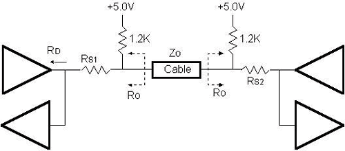

The original parallel port did not have a defined electrical specification that identified the driver, receiver, termination and capacitance requirements in order to guarantee any compatibility between devices. Host adapters and peripherals were built with any number of pull-up values on the control lines, open collector or totem pole drivers for the data and control lines, and most offensive of all, up to 10,000pF capacitors on the data and strobe lines. This type of design variation makes it impossible to create a new interface protocol without explicitly defining the required electrical parameters with which to guarantee operation.
The 1284 standard defines two levels of interface compatibility, Level I and Level II. The Level I interface is defined for products that are not going to operate at the high speed advanced modes, but need to take advantage of the reverse channel capabilities of the standard. The Level II interface is for devices that will operate in the advanced modes, with long cables, and at the higher data rates. This discussion will deal primarily with Level II interfaces. Please refer to the standard for the full requirements for either a Level I or Level II interface.
The requirements for the Level II drivers and receivers are defined at the connector interface. The driver requirements are:
Like the driver requirements, the receiver requirements are defined at the connector interface. The receiver requirements are:
Figure 1 shows the recommend termination for a driver/receiver pair. Ro represents the output impedance at the connector. It is intended that this impedance match the cable impedance so as to minimize the noise caused by mismatched impedances. Depending upon the type of driver used, a series resistor, Rs may be required to obtain the correct impedance.

Figure 2 shows the recommended termination for a Level II transceiver pair, such as the data lines.

There are products being introduced by companies such as Texas Instruments and National that provide integrated solutions for a 1284 Level II interface. These include active drivers and receivers as well as resister sip networks.
NOTE: When ECP was first introduced Microsoft made a recommendation for an electrical and termination requirement that was not consistent with the 1284 specification. This included an AC terminator for each of the lines. This suggestion has since been retracted and the current recommendation is to use the interface defined in the IEEE 1284 specification.